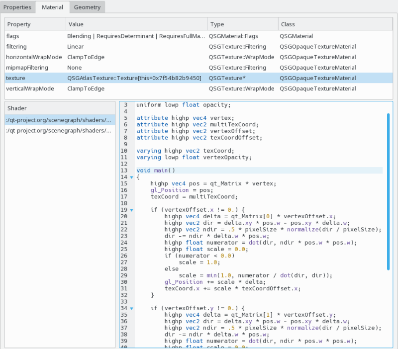

When having a scene graph node with an attached material selected (such as a QSGGeometryNode instance), the scene graph material view shows details about the material property and the used shader code. This is primarily accessible via the scene graph browser in the Qt Quick 2 Inspector tool.

The upper half of the material view shows the properties of the QSGMaterial instance. This works similarly to the generic Properties view.
On the lower left a list of associated OpenGL shaders is displayed, the lower right side shows the source code of the currently selected shader.